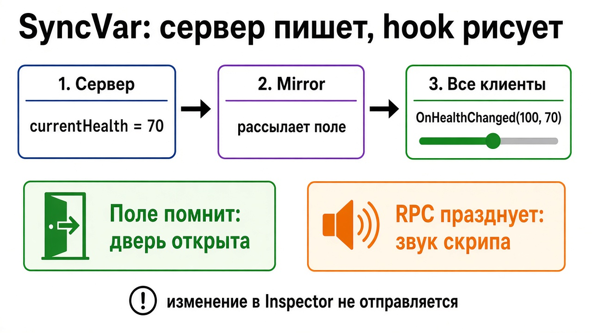

Тетрадь 2 · твой ПК
Число, имя, цвет и флаг «дверь открыта» должны совпасть у всех. Пишет их сервер. Картинку обновляет hook.
Ниже восемь вопросов. Под каждым сразу написан ответ.
Ответ
Состояние — то, что обязано совпасть: жизни, имя, цвет, открыта дверь, список имён.
SyncVar — одно поле на скрипте NetworkBehaviour. Сервер меняет поле, Mirror шлёт новое значение клиентам.
Hook — метод (старое, новое). В нём двигай слайдер, крась материал, включай свет. Сам hook число не хранит.
SyncList, SyncDictionary, SyncSet — список или словарь с той же идеей: на сервере добавил или удалил элемент, клиенты получили это изменение, а не весь мир заново.
Позицию каждый кадр в SyncVar не клади. Для позы есть NetworkTransform. SyncVar на Vector3 «чтобы было понятнее» забивает канал и опаздывает.

Ответ
Общая тетрадь лежит на сервере. SyncVar — строка «жизни = 70». Hook — звонок: «строка изменилась, перерисуй слайдер». Ты на клиенте в тетрадь не пишешь. Можешь попросить Command-ом: «я попал, вычти 30». Сервер проверяет и сам меняет строку.
RPC — фраза вслух: «дверь скрипнула». Кто зашёл позже, фразу не слышал. Строку «дверь открыта» он уже видит: при появлении объекта приезжают текущие SyncVar, ещё до OnStartClient. Поэтому дверь — поле, скрип — RPC.
На хосте hook тоже вызывается. Сцена у сервера и у его локального клиента одна, отдельно сериализовать её «самому себе» не нужно. Звук в hook на хосте не пропадёт.
На одном скрипте в этой версии Mirror два разных лимита: до 64 SyncVar и отдельно до 64 списков. 65-е поле или 65-й список — ошибка компиляции Weaver. Пять скриптов по десять полей — нормально.
Правка числа мышкой в Inspector рассылку не запускает. Меняй поле кодом на сервере.
В заготовке здоровья TakeDamage, Die и Respawn помечены [Server]. Hook OnHealthChanged только обновляет слайдер. Вспышка смерти — ClientRpc.
Пример цвета в стартере — скрипт ColorSyncExample на табличке IdeaPlaque, не на жёлтом кубе. Цвет пишется только если isServer, hook красит Renderer.
Куб в руке: при захвате GrabNetworkAuthority забирает authority. Когда отпускаешь, она не сбрасывается. Владелец — последний, кто схватил, пока куб не возьмёт другой.
Ответ
[SyncVar] уже в Mirror. Отдельный пакет не качай.SyncList<T>, SyncDictionary, SyncHashSet в Assets/Mirror/Core.NetworkAnimator.Ответ
NetworkBehaviour. На объекте есть NetworkIdentity.hook = nameof(Имя), два аргумента того же типа, старое и новое.[Server], в OnStartServer или после if (!isServer) return;.readonly SyncList<string> names = new SyncList<string>(); Меняй его на сервере через Add и Remove, не подменяй весь список новым объектом.Ответ
Ответ
| Что происходит | Где искать |
|---|---|
| Поменял в инспекторе, у друга по-старому | писать надо кодом на сервере |
| Hook молчит | значение не изменилось, другая сигнатура, объект ещё не в сети |
| Слайдер есть только у стрелявшего | UI обновляют локально, а не в hook |
| Новый игрок не видит открытую дверь | дверь сделали RPC. Нужен SyncVar |
| Звук попадания есть, жизни разъехались | RPC ушёл, SyncVar на сервере не записали |
| Список у клиента пустой | заполнили до Spawn или на клиенте |
| Ошибка Weaver | статик, свойство вместо поля, чужой тип, или 65-е поле / 65-й список |
Ответ
Ответ
SyncMode.Owner — если соседу это поле рисовать не нужно.